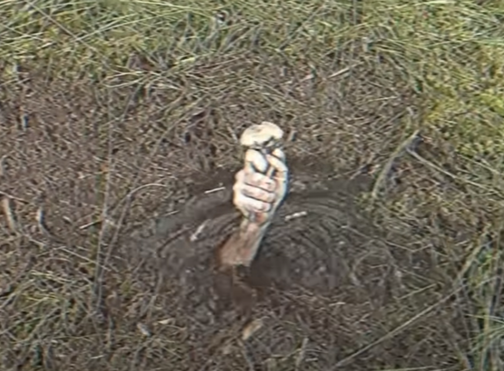
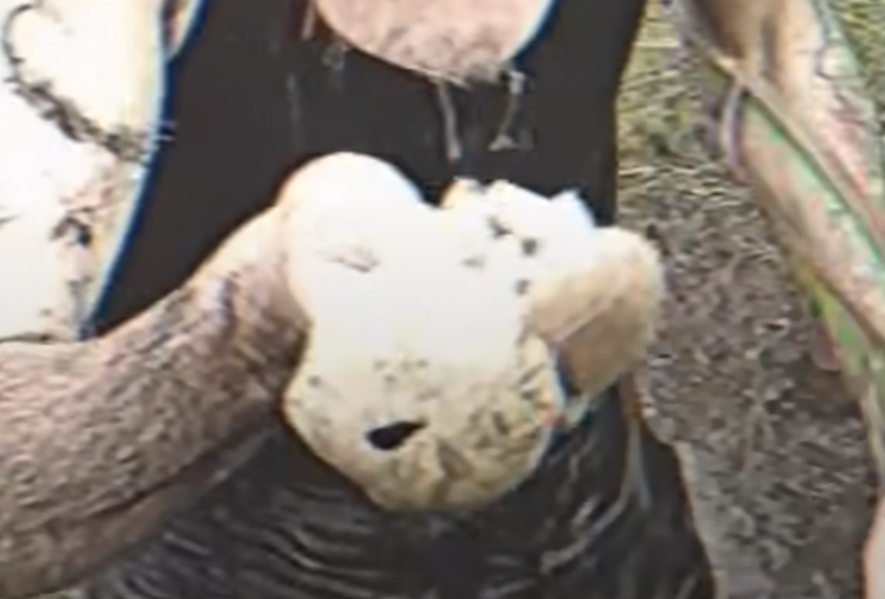

Підболотник — це таємничий гриб, що ховається на вологих галявинах біля боліт. Його капелюшок тьмяно сяє у сутінках, немов увібрав у себе світло місяця. Кажуть, хто знайде підболотник, може почути тихе шепотіння трясовини, яке відкриває шлях у приховані світи. Старі травники вірили, що цей гриб здатен зберігати сни й дарувати мандрівникам незвичайні видіння.
Мороковик — рідкісний гриб, що виростає лише в глибоких лісах, де сонце майже не торкається землі. Його чорнуватий капелюшок ніби поглинає світло, створюючи навколо відчуття прохолоди й тиші. У легендах кажуть, що мороковик береже таємниці ночі й може показати людині її приховані страхи, аби очистити душу від тіні.
Зоряниця — чарівний гриб із тонкою ніжкою та капелюшком, який світиться блакитними іскрами у темряві. Його можна побачити лише в серпневі ночі під час зорепаду, коли небесне сяйво торкається землі. Мандрівники вірять, що знайдена зоряниця приносить удачу й веде додому навіть з найдальших стежок.